06 相机与数字图像：光学定上限，相机只管采信
一句话：物镜已经把分辨率定死了，相机的任务是"用足够的像素把这份信息采下来，并且把每个光子的账算清楚"。
6.1 读出结构决定噪声性格
| CCD | sCMOS | |
|---|---|---|
| 读出方式 | 电荷逐行搬到一个读出放大器 | 每个像素自带放大器，并行读出 |
| 速度 | 慢 | 全幅 2000×2000 可跑 100 fps，子阵列可到 25,000 fps |
| 读出噪声 | 低 | <1.5 e⁻ |
| 代价 | 慢、binning 才有速度 | 像素间响应不一致（要平场校正）、默认 rolling shutter |
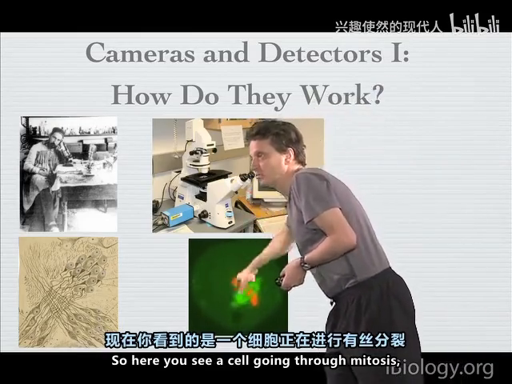
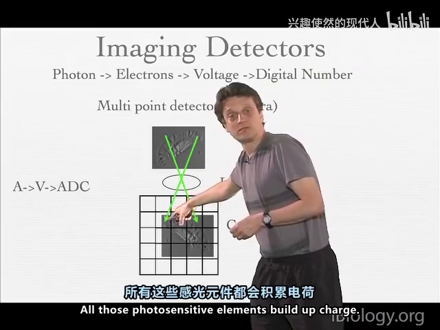
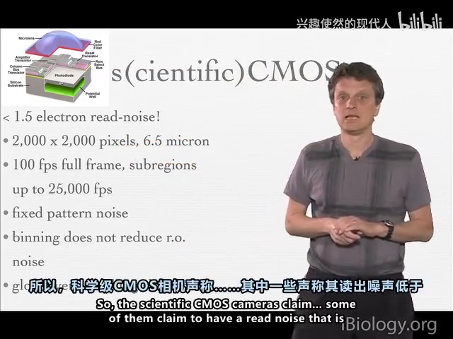
6.2 五个必须记住的指标
- 量子效率 QE：一个光子产生一个电子的概率。前照式约 70%，背照式约 95%。
- 读出噪声：每次读出叠加的固定误差，单位 e⁻，读得越快越大。
- 满阱容量：一个像素最多装多少电子，例 18,000 e⁻。
- 动态范围 = 满阱 / 读出噪声：18,000/6 ≈ 3,000，至少需要 12 位（4096 级）才能表达。
- 增益 gain = 均值/方差（光子转移曲线），单位 e⁻/ADU，实测可到 0.45。
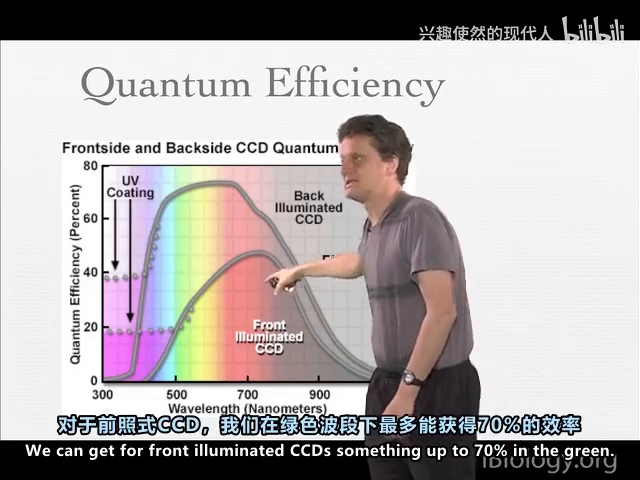
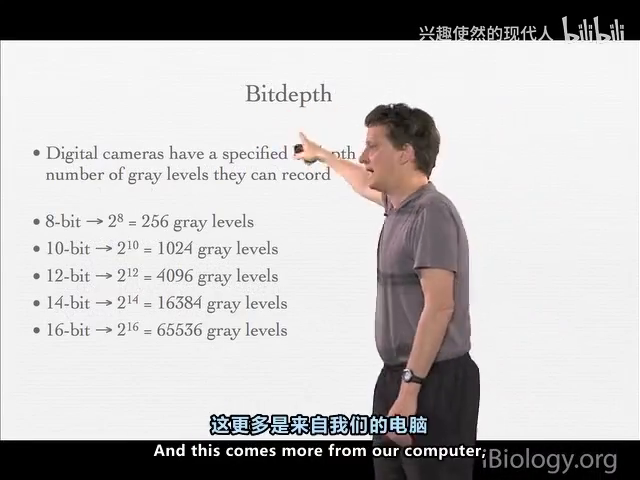
6.3 信噪比：为什么"曝光×4 只换来 SNR×2"
SNR = N / √(N + RN²)
- N 远大于读出噪声平方时，受散粒噪声限制，SNR ∝ √N；
- N 小于 RN² 时，受读出噪声限制——此时"多拍几张取平均"比"单张长曝光"更划算（长时间曝光会撞上背景与漂白）。
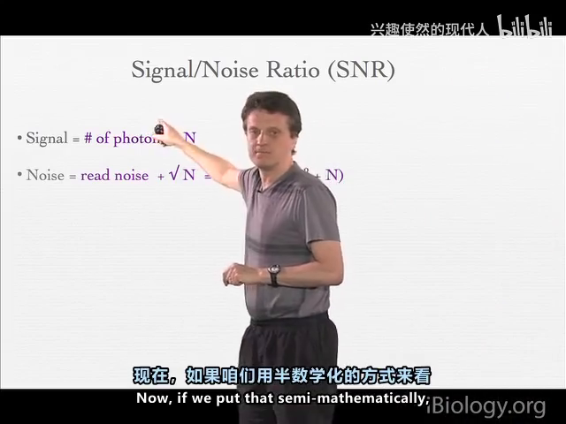
6.4 binning：用分辨率换灵敏度
2×2 binning 把 4 个 6.5 µm 像素的电荷合并成 13 µm 虚拟像素：SNR ×2、读出噪声只算一次，但采样变粗。
只在"弱光 + 不需要分辨率"时用。sCMOS 做 binning 不会再降噪声。
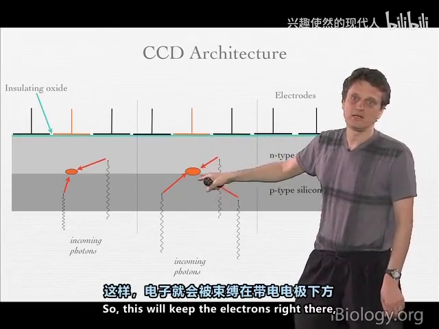
6.5 位深：显示器只有 8 位
- 8 位 256 级 / 12 位 4096 级 / 16 位 65536 级；
- 显示器单色只有 8 位，16 位图必须做 LUT 重映射才看得出层次；
- 位深压缩不可逆（4096 级压成 8 位，高端全变 255）→ 压缩放在流程最后一步；
- 人眼其实只分得清 100–150 级灰。
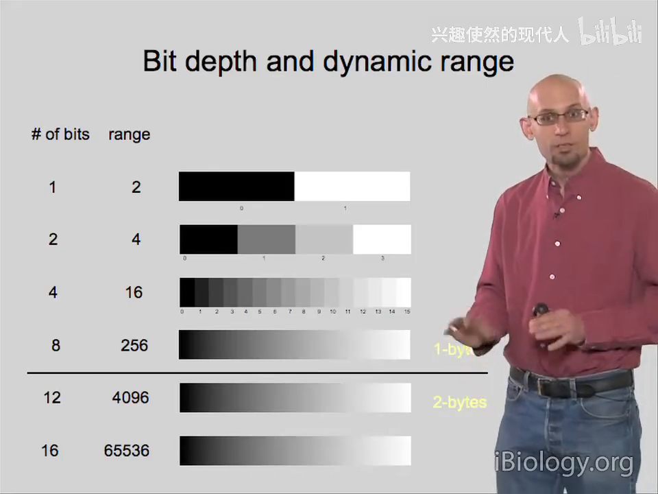
6.6 校准：暗场 + 平场
- 暗场图（盖镜头拍）：偏移（约 100 ADU，防负值截断）、暗电流、读出噪声（约 3 ADU）；
- 平场图（均匀荧光片）：视场照明不均可达 20–30%，还带坏点；
- 校正公式：I_真 =（I_测 − 暗场）/ 平场，必须用浮点存。
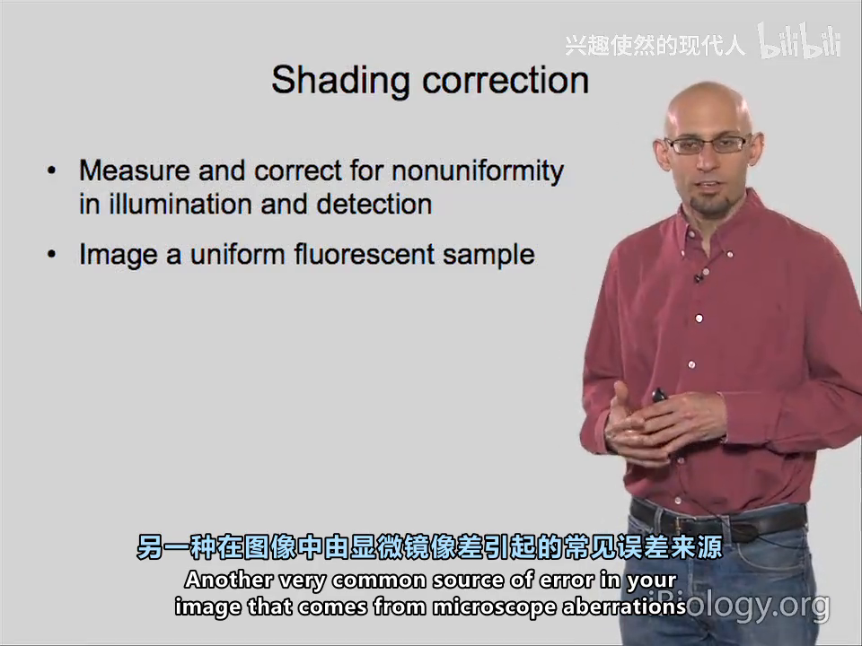
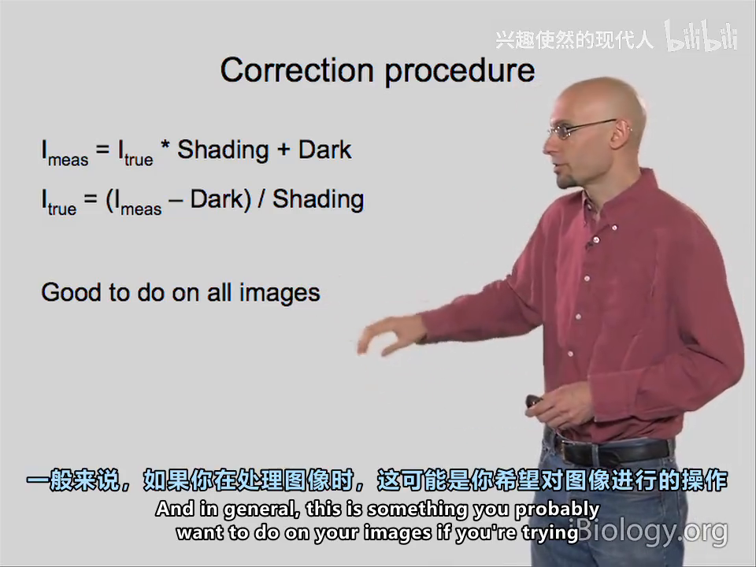
6.7 高速同步：把相机当视频机
用相机输出的"曝光中"TTL 电平触发 AOTF（µs 换波长）和压电 Z（ms 步进），0.2 µm 步进的双通道 Z 堆栈约 2 秒采完，耗时只由曝光时间决定。
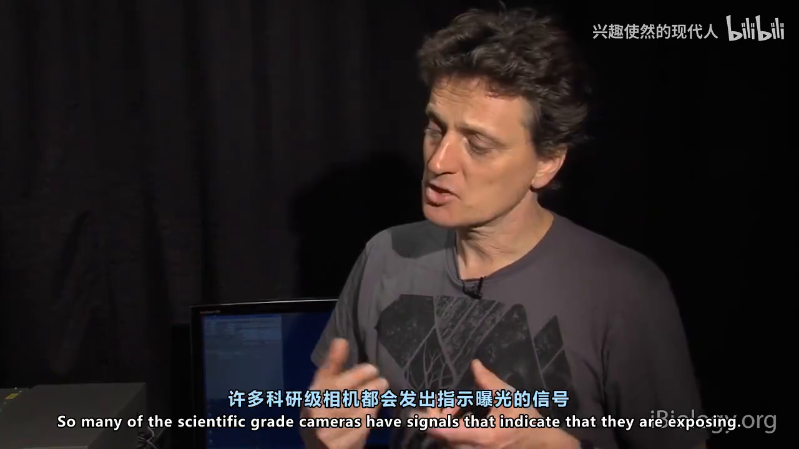
本章自测
- 一台相机满阱 18,000 e⁻、读出噪声 6 e⁻，动态范围多少？需要几位 ADC？
- 为什么弱光时"多拍平均"可能比"单张长曝光"更划算？
- 平场校正为什么必须用浮点存？
回看：P54（22:57，无字幕）、P55（36:26）、P56（30:35）、P57（29:27）、P60（19:32）、P61（5:51）。